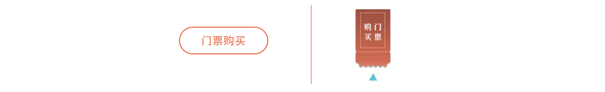
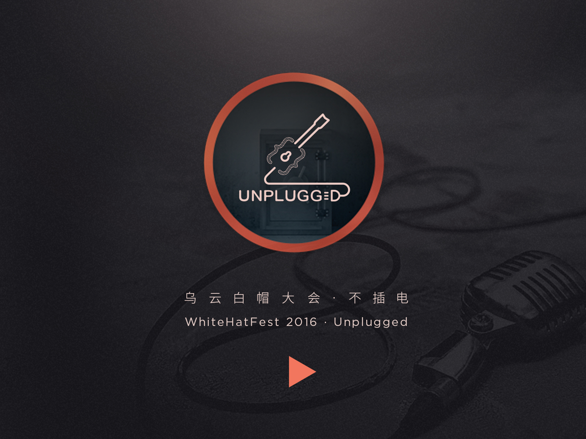

WHF is short for WooYun WhiteHat Fest. This year, we announced a brand new theme for this grand event - "Upplugged" and aimed to hold a conference only with those essential contents with pure and real valuable security topics but no other pretendious stuff. Therefore Designing and buliding a distinguishing and innovative event home page to convey the theme of our conference was the first and one of the most important part.
I was the interaction and visual designer to design and manage this project, cooperating with the front end engineer and the back end engineer to ensure to meet the deadline with a gorgeous, friendly-operated and stable website and making it adapt mobile phone as well.
As always, every time before I did something, I would ask myself "why do I have to do that".
It is the same with this project. Before design, I was trying to find the answer for why we have to build a site for a conference. I always hold this opinion - if there is no need, there would be no design. So I came to talk with our CEO and those colleagues in marketing department and listened their viewpoints or their needs for the conference. After that, I brainstormed with partners who are also responsible for managing the conference, thought about what theme of this conference is and analysed who the potential and target audience is.
Finally I came to the conclusion, we build this website is aim to convey our theme and spirits to our target audience in first time, to inform the public of the status of our preparation and to provide an access to our interactive part for online users whether they could participate in our conference or not.
And most importantly, we want to attract people to join in our conference and remember our brand.
We expect that people could see the button on every page in the site. As a designer, I don't want this button to bother people and distract people from the main content. Therefore I put ticket selling button on the sidebar and made it always fixed in the top-right corner, so that people could click this button to buy tickets while they were browsing the description of the conference details on any page.
As for the style of the ticket selling button, I knew my colleagues and audiences really care about it, especially where it is placed on the home page and what it looks like (It is the shortest path to get tickets, so it is necessary to be highlight and avoid being ignored). Originally I prepared two styles for it.
 After testing 10 people by let them choose the one that intuitively looks more acttractive and eye catching, 8 people chose the second one other than the outline stroke style. So I choose the second one that is also the one I like better to be the final button style.As "Unpplugged" originates from a musical concept, I brought an upplugged guitar here as a part of the logo for WHF. Also, WHF is a technical conference with numbers of security topics, so a keyhole as a symbol of security and a pair of braces presenting programming techniques were used here to compose the logo as well.
see what I did for WooYun Report 2015